빌드 개요 (How To Create Your Own Builds)
Idleon의 빌드는 크게 3가지 범주로 나뉩니다. 이 점을 이해하면 talents(탤런트), food, star signs, card sets, large alchemy bubbles, equipment, prayers, divinity link 등 다양한 게임 메커니즘을 목적에 맞게 조정할 수 있습니다.
Combat – AFK Fighting
AFK(방치) 상태로 몬스터를 사냥하며 게임 월드를 진행하거나, 몬스터 자원 또는 클래스 경험치를 얻기 위한 빌드입니다. 이것이 목적이라면 다음을 최적화하세요:
- 공격 talents를 attack bar에 배치
- Accuracy (명중률, 최소 95%)
- AFK Fighting gains (방치 전투 획득량)
- Damage (데미지 — weapon power, 주력 클래스 스탯, multikill 증가)
- Monster respawn (몬스터 리스폰)
- Movement speed (이동 속도)
- Drop chance (드롭 확률 — 희귀 몬스터 드롭이나 cards를 노릴 경우)
이 메커니즘 중 일부는 처음부터 사용할 수 있는 것이 아니며 각각 고유의 상한(cap)이 있습니다. 따라서 극한 효율(min-max)을 추구하는 플레이어는 AFK Info 창에서 최적의 조합을 직접 실험해 볼 수 있습니다.
Combat – Active Fighting
AFK 전투와 동일한 talent preset을 자주 사용하는 또 다른 전투 빌드입니다. 드롭이나 경험치를 위한 crystal monster 파밍, giant monster 사냥, 또는 Active(직접 플레이)가 필요한 특정 게임 메커니즘 사용 등, 캐릭터를 직접 조작하며 플레이하려 할 때 사용합니다.
커뮤니티에서 흔히 Active 플레이라 부르는 이 방식은 Auto 기능을 켠 채 Idleon을 장시간 실행해 두는 방식이며, 플레이어가 게임에 적극적으로 개입할 필요는 없습니다. 한 번에 한 캐릭터만 Active 상태가 될 수 있으며, 땅에 떨어진 드롭을 줍기 위해서는 1시간 이내 (코인은 20분)에 회수하거나, 전용 펫 Mr Pig를 거래로 얻거나, Gem Shop에서 $5에 auto-loot 기능을 구매해야 합니다.
Active 플레이는 목표에 따라 다음을 최적화합니다:
- 공격 및 respawn talents를 attack bar에 배치
- Crystal spawn chance (크리스탈 스폰 확률)
- Class experience gain (클래스 경험치 획득)
- Drop rate (드롭률)
현재 여러 클래스를 Active로 플레이하는 대표적인 이유는 아래와 같으며, 이러한 상황의 대부분은 World 4 이후부터 등장합니다:
| Class | Active For (Active 플레이 이유) |
|---|---|
| Maestro / Voidwalker | crystal monster를 처치할 때 스킬 레벨업에 필요한 스킬 경험치를 줄여 주는 Crystal Countdown talent. |
| Bubonic Conjuror | Raise Dead talent와 다양한 광역(AoE) 능력으로 alchemy liquid 생성을 늘려 주는 Cranium Cooking. Cranium Cooking 파밍으로 상당한 돈도 벌 수 있지만, Divine Knight만큼은 아닙니다. |
| Divine Knight | Orb of Remembrance가 경험치와 드롭률을 높이고, 여기에 Divine Intervention 부활이 더해져 Crystal Monster 드롭 파밍에 최고의 Active 클래스이자 최고의 돈벌이 클래스가 됩니다. Divine Knight는 몬스터 카드 정보 화면의 Rare Drop Bags 안에 있는 드롭을 파밍해야 합니다. |
| Siege Breaker | Plunderous Mobs를 스폰시켜 적 몬스터가 빠른 속도로 리스폰되도록 만들며, 동시에 모든 캐릭터의 드롭률을 높여 주는 영구 계정 stack을 쌓습니다. |
| Elemental Sorcerer | 다른 차원에서 몬스터를 소환해 계정 전체에 데미지 보너스를 제공합니다. Rare Drop bags에 속하지 않는 몬스터 카드나 드롭(예: World 2의 Sandy Pots에서 나오는 Glass Shards) 파밍에 가장 뛰어납니다. |
| Death Bringer | Wraith Form이라는 리셋 메커니즘을 중심으로 하며, 몬스터에게서 bones를 파밍해 계정 전체 업그레이드에 사용합니다. |
| Wind Walker | Tempest Form이라는 리셋 메커니즘을 중심으로 하며, 몬스터에게서 Dust와 Medallions를 파밍해 계정 전체 업그레이드에 사용합니다. |
| Arcane Cultist | Arcanist Form이라는 리셋 메커니즘을 중심으로 하며, 몬스터에게서 Tachyons를 파밍해 계정 전체 업그레이드에 사용합니다. |
Skilling Builds
Skilling 빌드는 특정 월드 스킬에서 자원·진행·경험치를 위한 skilling 획득량(Idleon 효율)을 극대화하는 데 초점을 둡니다. Idleon의 각 월드에는 특정 클래스와 연결된 3개의 스킬이 있으며, 이 스킬들은 해당 월드 보스를 처치하는 데 도움이 되는 계정 버프를 제공합니다. skilling 시 다음을 최적화하세요:
- skilling talents를 attack bar에 배치 (Big Pick)
- Skill efficiency / power (스킬 효율 / 파워)
- AFK Skilling gains (방치 스킬링 획득량)
- Multi resource chance (다중 자원 확률)
- Skill experience (스킬 경험치)
- Drop chance (드롭 확률 — 희귀 스킬링 자원 드롭이나 cards를 노릴 경우)
World 3 이후부터는 대부분의 skilling 자원이 3D printer 메커니즘을 사용해 재료를 지속적으로 공급받는 방식으로 얻어집니다.
클래스 빌드 (Class Builds)
기본직 → 전직 → 엘리트 → 마스터 순으로 정렬한 직업 트리입니다. 각 노드의 작은 글씨는 해당 클래스가 담당하는 스킬. KO는 한글 번역본.
스킬 가이드 (Skill Guides)
기타 가이드 (Other Idleon Guides)
General Guides
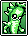
Card BuildsKO QuestsKO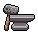
Equipment ProgressionKOWorld 1
World 2
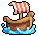
Island ExpeditionsKO Post OfficeKO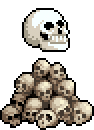
KillroyKO ObolsKO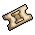
Weekly Boss BattlesKO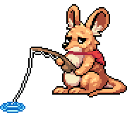
Poppy The KangarooKO Party DungeonKOWorld 3
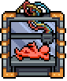
3D Printer SampleKO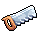
ConstructionKO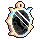
Equinox ValleyKO Bubba The SealKOWorld 4
World 5
World 6
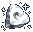
SummoningKO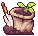
FarmingKO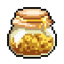
Golden Food Beanstalk FarmingKOWorld 7